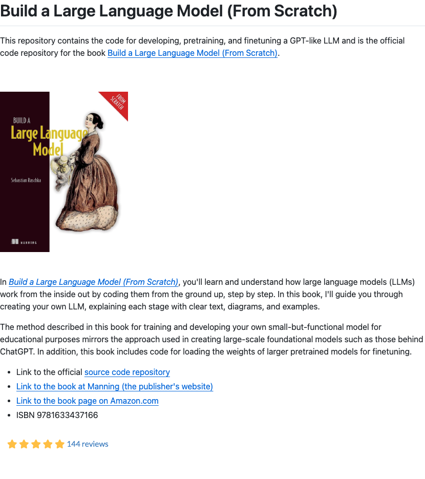

Twitter
madebygoogle_Gemini Live Real-time Visual Conversation and Advice
Published: 2025-08-20T17:15:17.000Z
Made by Google announced a new camera sharing feature in Gemini Live, allowing users to share their camera feed in conversations for real-time advice. The Gemini App can identify and point out specific objects, such as recommending the best glasses shape for a user's face, significantly enhancing the AI assistant's practicality and interactivity by providing a more intuitive and personalized visual assistance experience.
madebygoogle_Google Gemini App Launches Video Generation, Pixel 10 Pro Buyers Get AI Pro
Published: 2025-08-20T17:14:08.000Z
Google's Made by Google announced that its Gemini app now features video generation, allowing users to quickly create videos with sound from text or photos. This new capability aims to bring ideas to life in minutes. Furthermore, customers who purchase the Pixel 10 Pro or Pixel 10 Pro Fold will receive a complimentary one-year subscription to Google AI Pro, promoting the broader adoption of Google's AI services.
CerebrasSystems_Becomes Hugging Face Inference Provider
Published: 2025-08-20T00:08:50.000Z
Cerebras Systems announced it has become an inference provider for Hugging Face, handling 5 million monthly requests. Hugging Face's inference provider network has surpassed 20 million monthly requests, with Cerebras, Novita Labs, and Fireworks AI showing the fastest growth. This service currently powers OpenAI's official open playground and is integrated into various applications.
AndrewYNg_AI Dev 25 NYC Summit Announced
Published: 2025-08-20T13:55:16.000Z
Andrew Ng announced the AI Dev 25 conference will take place on November 14 in NYC, expecting over 1,200 developers. The event will delve into cutting-edge AI topics, including Agentic AI (e.g., multi-agent orchestration, tool use), AI-assisted coding, Context Engineering (e.g., advanced RAG, memory systems), Multimodal AI (e.g., vision-language models), and Fintech applications. A larger venue was secured due to the rapid sell-out of the previous Pi Day AI Dev event.
Google_Pixel 10 Ten Camera Updates
Published: 2025-08-20T21:47:16.000Z
Google announced ten significant camera updates for its Pixel 10 smartphone, aiming to greatly enhance the user photography experience. New features include high-resolution portraits and selfies, smoother stabilization, 100x Pro Res Zoom, AI-assisted composition guidance (Camera Coach), Auto Best Take for group shots, and deep integration with Google Photos. Additionally, Guided Frame powered by Gemini models and C2PA Content Credentials for image authenticity are introduced, along with real-time preview, comprehensively optimizing photo capture.
Google_Gemini Visual and Interaction Capabilities Upgrade
Published: 2025-08-20T20:45:53.000Z
Google announced significant upgrades to its Gemini assistant, transforming it into a more helpful, natural, and visual AI. Key enhancements include new visual guidance, enabling Gemini to see what users see and highlight objects directly on screen when the camera is shared. Speech interaction has become more natural and expressive, with improvements in intonation, rhythm, and pitch. Furthermore, Gemini can now connect to a wider range of Google applications, such as Messages, Phone, and Clock, with user permission, offering more comprehensive assistance.
wechat
OpenAI Executive Reveals: Scaling Endures, GPT-5's "Dual-Axis Training" Breaks Through Intelligence Ceiling
Published: 2025-08-20T01:46:22.000Z
OpenAI COO Brad Lightcap revealed key breakthroughs in GPT-5, emphasizing its ability to autonomously decide whether to perform deep reasoning before answering, significantly enhancing user experience. GPT-5's intelligence leap is not merely exponential growth but achieved through "dual-axis training," combining pre-training (where scaling laws still hold) and post-training, yielding substantial gains in the latter. The model demonstrates comprehensive upgrades in accuracy, response speed, tool utilization, and structured thinking, showcasing strong potential in health, coding, and legal domains. Lightcap noted that while scaling laws remain valid, post-training represents a new paradigm for advancing model intelligence. Although GPT-5 is not AGI, it embodies the nascent form of a generalized learning system. OpenAI will continue to advance across multiple dimensions—algorithms, scale, compute, and data—to ensure more users and enterprises benefit from GPT-5's powerful capabilities and to foster the AI ecosystem.
DeepSeek V3.1 Base Stealthily Launched! Outperforms Claude 4 in Programming, Community Awaits R2 and V4
Published: 2025-08-20T14:01:05.000Z
DeepSeek has stealthily launched its V3.1 model, a 685B-parameter large language model that extends its context length to 128K and achieves significant breakthroughs in programming capabilities. Benchmarking reveals V3.1 scored 71.6% on the Aider programming benchmark, surpassing Claude Opus 4, while offering faster inference and response times at a cost merely one-sixtieth of proprietary systems. The new version also introduces native “search token” support and hints at a potential future mixed architecture. Despite the model card not yet being released, V3.1 has already climbed to the top of Hugging Face's trending list, fueling strong community anticipation for R2 and V4. This update further solidifies DeepSeek's leading position in the open-source large model domain, demonstrating robust competitiveness, particularly in programming performance and cost-efficiency.
Qwen-2.5-VL 7B Model Achieves Autonomous 'Visual Reflection' with 'Look-Back' Mechanism, Boosting Perception Task Performance by 6.3%
Published: 2025-08-20T14:01:05.000Z

Multimodal Large Language Models (MLLMs) frequently exhibit a tendency to over-rely on textual information during the latter stages of complex reasoning, often neglecting the critical integration of visual input. To address this limitation, the Qwen-2.5-VL 7B model introduces a groundbreaking "Look-Back" mechanism. This novel approach empowers the model to autonomously determine when and where to re-focus its attention on visual information throughout the inference process, crucially without requiring explicit image re-injection or any modifications to its core architecture. Developed through a sophisticated two-stage training framework, which combines supervised fine-tuning with reinforcement learning, the "Look-Back" mechanism has yielded substantial performance improvements. Specifically, it has boosted the model's average performance by approximately 7% in mathematical reasoning tasks and 6.3% in perception-based tasks. This significant advancement not only redefines the multimodal reasoning paradigm but also substantially enhances the model's generalization capabilities, positioning it as a highly competitive solution in the field.
Is DiT Mathematically and Formally Wrong? Xie Saining Responds: Don't Do Science in Your Head
Published: 2025-08-20T04:23:48.000Z
Recently, a post questioned the DiT model's architectural flaws, citing its premature FID stabilization, the use of unstable post-LayerNorm, and the expression-limiting adaLN-zero, even claiming that replacing some computational units with identity functions improved performance. Xie Saining, the author of DiT, responded by acknowledging some “hard flaws” like the inefficient sd-vae, but emphasized DiT's academic standing as the foundational architecture for Sora and Stable Diffusion 3. He stressed that scientific research requires empirical validation, not mere speculation. Xie argued that methods like TREAD are more akin to regularization effects rather than revealing fundamental errors in DiT, and offered suggestions for robust DiT upgrades, reiterating the pivotal role of experimental verification in scientific exploration.
Zhipu AI Unveils World's First Universal Mobile Agent, Free for All, Capable of Directly Controlling Cloud PCs
Published: 2025-08-20T04:31:04.000Z
Zhipu AI has launched AutoGLM, the world's first universal mobile agent, featuring a groundbreaking cloud-based execution architecture. This innovation allows users to command the AI via voice to perform complex, cross-application tasks such as ordering food, comparing product prices, generating reports, and creating presentations, all without consuming local device resources. AutoGLM supports operations on both mobile phones and cloud PCs, effectively addressing the computational limitations and resource occupation issues prevalent in traditional agents, thereby significantly enhancing user experience. This agent integrates multimodal capabilities including reasoning and coding, representing a pivotal stride for Zhipu AI towards Artificial General Intelligence (AGI) and validating the viability of cloud-based agents. Zhipu AI has also released an API to foster the widespread adoption of Agent technology and build a collaborative ecosystem, signaling the imminent arrival of an era where users can simply "ask once and let the agent handle the rest."
Claude Code and Gemini Abandon Code Indexing: A Misstep
Published: 2025-08-20T10:05:26.000Z
The article criticizes AI IDEs like Claude Code and Gemini for abandoning code indexing (RAG) in favor of traditional grep-like text search, highlighting issues such as high token consumption, inefficiency, and a lack of semantic understanding. The author demonstrates through practical testing that integrating vector retrieval significantly improves efficiency and saves tokens. To address this pain point, the author open-sourced the "claude-context" project, a code retrieval tool that integrates vector databases and embedding models. The article elaborates on its technical details, including its MCP architecture, AST-based code splitting, and Merkle Tree synchronization mechanism. It showcases the project's remarkable effectiveness in real-world applications, achieving over 40% token savings, and emphasizes the critical role of code indexing in providing high-quality context for AI IDEs.
GitHub
Build and deploy AI agent workflows in minutes.
Published: 2025-08-20T16:56:09Z

Sim is a platform designed for rapidly building and deploying AI agent workflows. It offers flexible deployment options, including cloud-hosted services and various self-hosting methods such as NPM packages, Docker Compose, development containers, and manual setup. The platform supports integration with local AI models via Ollama and leverages PostgreSQL with the pgvector extension for efficient vector embeddings, enabling advanced AI functionalities like knowledge bases and semantic search. Built on a modern tech stack including Next.js, Bun, Drizzle ORM, and Socket.io, Sim aims to streamline the development of sophisticated AI applications.
Project AIRI
Published: 2025-08-20T20:19:11Z

Project AIRI aims to recreate Neuro-sama, developing a comprehensive container for AI waifu and virtual characters, enabling them to interact, play games, and engage in natural conversations with users. Positioned as a robust open-source alternative to existing proprietary solutions like Neuro-sama, AIRI distinguishes itself by leveraging cutting-edge Web technologies such as WebGPU, WebAssembly, and Web Workers. This architectural choice ensures broad compatibility, allowing the application to run seamlessly across modern browsers, desktop environments, and even mobile devices with PWA support. The platform integrates with a wide array of large language model APIs, providing flexibility and power. Its core functionalities include sophisticated memory systems, advanced client-side speech recognition, realistic speech synthesis, and precise control over VRM and Live2D models. Project AIRI is dedicated to empowering individuals to easily own, customize, and manage their personalized digital companions, ushering in a new era of interactive and accessible virtual life experiences.
Self-hosted AI starter kit
Published: 2025-07-17T08:11:19Z

The Self-hosted AI Starter Kit is an open-source Docker Compose template meticulously crafted to swiftly initialize a comprehensive local AI and low-code development environment. This robust solution seamlessly combines the self-hosted n8n platform, renowned for its extensive integrations and advanced AI components, with essential AI products like Ollama for running local large language models, Qdrant as a high-performance vector store, and PostgreSQL for reliable data management. It supports diverse hardware configurations, including Nvidia and AMD GPUs, as well as CPU-only setups. The kit empowers users to securely develop a wide array of AI-powered applications, such as intelligent AI agents for task automation, confidential document summarization without data leaks, and enhanced communication tools like smarter Slack bots. Ideal for rapid prototyping and proof-of-concept projects, it provides a complete, self-contained ecosystem for building and experimenting with AI workflows locally, ensuring data privacy and cost efficiency.
Build a Large Language Model (From Scratch)
Published: 2025-08-20T02:08:29Z

This GitHub repository serves as the official code companion for the book "Build a Large Language Model (From Scratch)," guiding readers through the process of developing, pretraining, and finetuning GPT-like large language models from the ground up. The project provides comprehensive code examples, covering text data handling, attention mechanism implementation, GPT model construction, unsupervised pretraining, and both classification and instruction finetuning. It emphasizes a hands-on coding approach to deeply understand the internal workings of LLMs, also supporting the loading of larger pretrained models for finetuning. This resource is ideal for individuals seeking a systematic and practical learning experience in LLM development.
terminal-bench
Published: 2025-08-20T22:24:50Z
Terminal-Bench is a robust benchmark platform specifically designed to rigorously evaluate the performance of AI agents within authentic terminal environments. It offers a comprehensive, reproducible task suite and an advanced execution harness, empowering agents to autonomously tackle complex, end-to-end real-world challenges, ranging from intricate code compilation and model training to sophisticated server setup. The platform fundamentally consists of two core components: a diverse dataset of tasks and an innovative execution harness that seamlessly connects large language models to a secure, sandboxed terminal environment. This design provides a practical and realistic evaluation framework for developers building LLM agents, benchmarking AI frameworks, and stress-testing advanced system-level reasoning capabilities. Currently in its beta phase with approximately 100 diverse tasks, Terminal-Bench is actively expanding to become a more comprehensive testbed for AI agents in text-based environments.
bitnet.cpp
Published: 2025-06-03T06:14:20Z

bitnet.cpp is the official inference framework from Microsoft for 1-bit Large Language Models (LLMs) like BitNet b1.58. It provides a suite of optimized kernels that enable fast and lossless inference of 1.58-bit models on both CPUs and GPUs. The framework achieves significant speedups, ranging from 1.37x to 5.07x on ARM CPUs and 2.37x to 6.17x on x86 CPUs, while also substantially reducing energy consumption. Notably, bitnet.cpp can run a 100B BitNet b1.58 model on a single CPU at speeds comparable to human reading, greatly enhancing the potential for deploying LLMs on local devices and marking a significant advancement in edge AI inference.
huggingface
Chain-of-Agents: End-to-End Agent Foundation Models via Multi-Agent
Distillation and Agentic RL
Published: 2025-08-06T17:01:02.000Z

Recent advances in large language models (LLMs) and multi-agent systems have
demonstrated remarkable capabilities in complex problem-solving tasks such as
deep research, vibe coding, and mathematical reasoning. However, most existing
multi-agent systems are built upon manual prompt/workflow engineering with
sophisticated agent frameworks, making them computationally inefficient, less
capable, and can not benefit from data-centric learning. In this work, we
introduce Chain-of-Agents (CoA), a novel paradigm of LLM reasoning that enables
native end-to-end complex problem-solving in the same way as a multi-agent
system (i.e., multi-turn problem solving with multiple tools and multiple
agents) within one model. In chain-of-agents problem-solving, the model
dynamically activates different tool agents and role-playing agents to simulate
multi-agent collaboration in an end-to-end fashion. To elicit end-to-end
chain-of-agents problem-solving abilities in LLMs, we introduce a multi-agent
distillation framework to distill state-of-the-art multi-agent systems into
chain-of-agents trajectories for agentic supervised fine-tuning. We then use
agentic reinforcement learning on verifiable agentic tasks to further improve
the models' capabilities on chain-of-agents problem solving. We call the
resulting models Agent Foundation Models (AFMs). Our empirical studies
demonstrate that AFM establishes new state-of-the-art performance across
diverse benchmarks in both web agent and code agent settings. We make the
entire research, including the model weights, code for training and evaluation,
and the training data, fully open-sourced, which offers a solid starting point
for future research on agent models and agentic RL.
Prompt Orchestration Markup Language
Published: 2025-08-19T15:37:29.000Z

Large Language Models (LLMs) require sophisticated prompting, yet current
practices face challenges in structure, data integration, format sensitivity,
and tooling. Existing methods lack comprehensive solutions for organizing
complex prompts involving diverse data types (documents, tables, images) or
managing presentation variations systematically. To address these gaps, we
introduce POML (Prompt Orchestration Markup Language). POML employs
component-based markup for logical structure (roles, tasks, examples),
specialized tags for seamless data integration, and a CSS-like styling system
to decouple content from presentation, reducing formatting sensitivity. It
includes templating for dynamic prompts and a comprehensive developer toolkit
(IDE support, SDKs) to improve version control and collaboration. We validate
POML through two case studies demonstrating its impact on complex application
integration (PomLink) and accuracy performance (TableQA), as well as a user
study assessing its effectiveness in real-world development scenarios.
Embodied-R1: Reinforced Embodied Reasoning for General Robotic
Manipulation
Published: 2025-08-19T16:50:01.000Z

Generalization in embodied AI is hindered by the "seeing-to-doing gap," which
stems from data scarcity and embodiment heterogeneity. To address this, we
pioneer "pointing" as a unified, embodiment-agnostic intermediate
representation, defining four core embodied pointing abilities that bridge
high-level vision-language comprehension with low-level action primitives. We
introduce Embodied-R1, a 3B Vision-Language Model (VLM) specifically designed
for embodied reasoning and pointing. We use a wide range of embodied and
general visual reasoning datasets as sources to construct a large-scale
dataset, Embodied-Points-200K, which supports key embodied pointing
capabilities. We then train Embodied-R1 using a two-stage Reinforced
Fine-tuning (RFT) curriculum with a specialized multi-task reward design.
Embodied-R1 achieves state-of-the-art performance on 11 embodied spatial and
pointing benchmarks. Critically, it demonstrates robust zero-shot
generalization by achieving a 56.2% success rate in the SIMPLEREnv and 87.5%
across 8 real-world XArm tasks without any task-specific fine-tuning,
representing a 62% improvement over strong baselines. Furthermore, the model
exhibits high robustness against diverse visual disturbances. Our work shows
that a pointing-centric representation, combined with an RFT training paradigm,
offers an effective and generalizable pathway to closing the perception-action
gap in robotics.
A Stitch in Time Saves Nine: Proactive Self-Refinement for Language
Models
Published: 2025-08-18T13:07:21.000Z

Recent advances in self-refinement have demonstrated significant potential
for improving the outputs of large language models (LLMs) through iterative
refinement. However, most existing self-refinement methods rely on a reactive
process with a fixed number of iterations, making it difficult to determine the
optimal timing and content of refinement based on the evolving generation
context. Inspired by the way humans dynamically refine their thoughts during
execution, we propose ProActive Self-Refinement (PASR), a novel method that
enables LLMs to refine their outputs during the generation process. Unlike
methods that regenerate entire responses, PASR proactively decides whether,
when, and how to refine based on the model's internal state and evolving
context. We conduct extensive experiments on a diverse set of 10 tasks to
evaluate the effectiveness of PASR. Experimental results show that PASR
significantly enhances problem-solving performance. In particular, on Qwen3-8B,
PASR reduces average token consumption by 41.6 percent compared to standard
generation, while also achieving an 8.2 percent improvement in accuracy. Our
code and all baselines used in the paper are available in the GitHub.
Training-Free Text-Guided Color Editing with Multi-Modal Diffusion
Transformer
Published: 2025-08-12T17:57:04.000Z

Text-guided color editing in images and videos is a fundamental yet unsolved
problem, requiring fine-grained manipulation of color attributes, including
albedo, light source color, and ambient lighting, while preserving physical
consistency in geometry, material properties, and light-matter interactions.
Existing training-free methods offer broad applicability across editing tasks
but struggle with precise color control and often introduce visual
inconsistency in both edited and non-edited regions. In this work, we present
ColorCtrl, a training-free color editing method that leverages the attention
mechanisms of modern Multi-Modal Diffusion Transformers (MM-DiT). By
disentangling structure and color through targeted manipulation of attention
maps and value tokens, our method enables accurate and consistent color
editing, along with word-level control of attribute intensity. Our method
modifies only the intended regions specified by the prompt, leaving unrelated
areas untouched. Extensive experiments on both SD3 and FLUX.1-dev demonstrate
that ColorCtrl outperforms existing training-free approaches and achieves
state-of-the-art performances in both edit quality and consistency.
Furthermore, our method surpasses strong commercial models such as FLUX.1
Kontext Max and GPT-4o Image Generation in terms of consistency. When extended
to video models like CogVideoX, our approach exhibits greater advantages,
particularly in maintaining temporal coherence and editing stability. Finally,
our method also generalizes to instruction-based editing diffusion models such
as Step1X-Edit and FLUX.1 Kontext dev, further demonstrating its versatility.
Radiance Fields in XR: A Survey on How Radiance Fields are Envisioned
and Addressed for XR Research
Published: 2025-08-06T11:14:06.000Z

The development of radiance fields (RF), such as 3D Gaussian Splatting (3DGS)
and Neural Radiance Fields (NeRF), has revolutionized interactive
photorealistic view synthesis and presents enormous opportunities for XR
research and applications. However, despite the exponential growth of RF
research, RF-related contributions to the XR community remain sparse. To better
understand this research gap, we performed a systematic survey of current RF
literature to analyze (i) how RF is envisioned for XR applications, (ii) how
they have already been implemented, and (iii) the remaining research gaps. We
collected 365 RF contributions related to XR from computer vision, computer
graphics, robotics, multimedia, human-computer interaction, and XR communities,
seeking to answer the above research questions. Among the 365 papers, we
performed an analysis of 66 papers that already addressed a detailed aspect of
RF research for XR. With this survey, we extended and positioned XR-specific RF
research topics in the broader RF research field and provide a helpful resource
for the XR community to navigate within the rapid development of RF research.